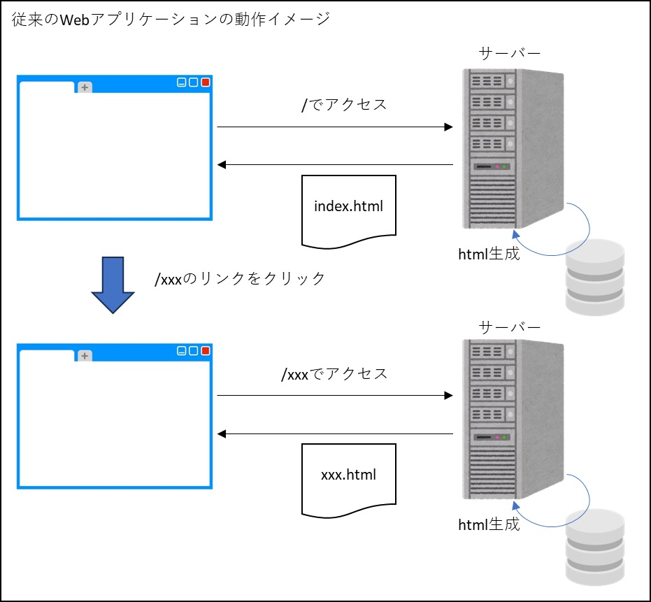
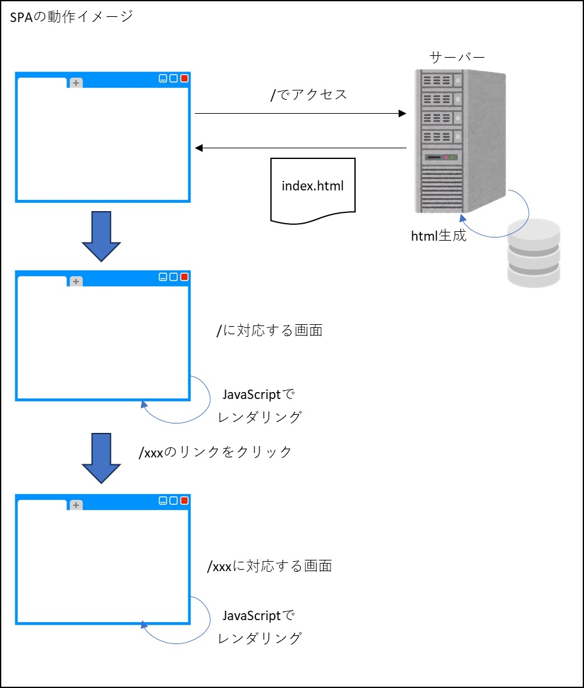
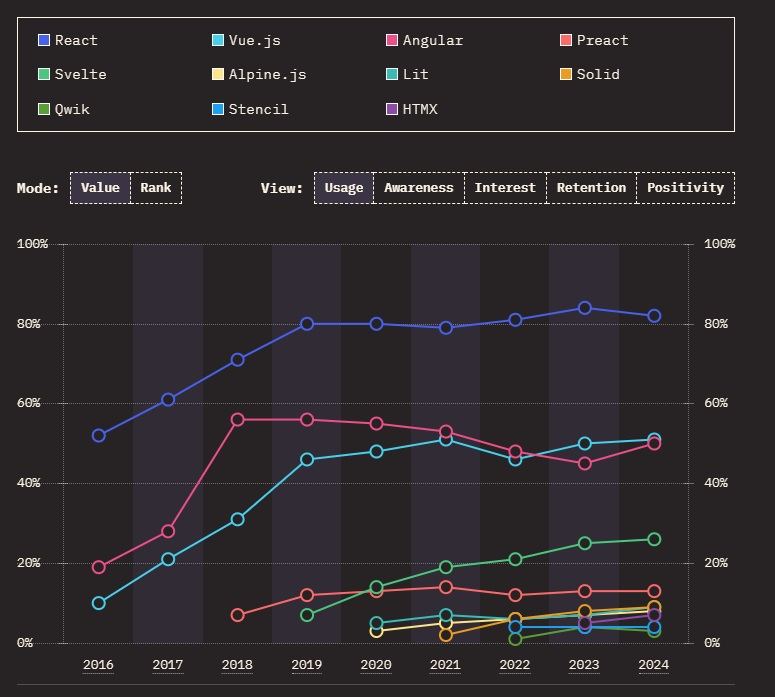

SPA(Single Page Application)
はじめに
このページは、JavaScriptの進化の続きのページです。
ここではSPA(Single Page Application)にスポットを当てて記載していきます。
一応このページから読み進めても問題ないように構成したつもりですが、先のページを見てからの方が、SPAが生まれるまでの背景がわかって面白いかもしれません。
SPA(Single Page Application)
SPA(Single Page Application)は従来のWebアプリケーションとは異なる手法でWebページのレンダリング（HTMLやCSS、JavaScriptなどで書かれたコードをWebページとして閲覧できる形に変換すること）を行います。
下図は従来のレンダリング手法。サーバーサイドでレンダリングしてhtmlを生成し、クライアントに返却するという手法です。
htmlを受け取ったクライアントはそのたびにヘッダやフッダを含めて全て更新する方式をとっていました。

一方、下図がSPAのレンダリングです。SPAでは、最初にHTMLやCSS、JavaScriptを受け取った後は必要なデータだけをサーバに要求し差分を表示する方式で構築されます。
下図のように、ページをHTTPで最初にロードしたら、あとは手元のデータを処理するだけでインターフェースが構成されます。必要なデータはサーバーから非同期的にJSONデータとして受け取ることで、通信量を最小限に抑えることも可能です。

SPAをサポートするフレームワーク
この新しい形式のWebアプリケーションであるSPAをサポートするフレームワークとして、React, Vue.js, Angular, Svelteなどがあります。
| フレームワーク | 特徴 |
|---|---|
| React （リアクト） |
Meta社（旧Facebook社）主導のフレームワーク（厳密にはフレームワークではなくライブラリ）。UIデザインの知識がなくても最先端のフロントエンドが作れるスマホアプリにも拡張できる。 仮想DOM(※)を介してDOMを更新。 |
| Vue.js （ヴュー・ジェイエス） |
シンプルなフレームワークで使いやすく、学習コストが低い。 大規模開発には向かない（と書いているサイトをよく見かける）。 仮想DOMを介してDOMを更新。 |
| Angular （アンギュラー） |
Google主導のフレームワーク。動作端末を考慮する必要がなく、汎用性が高い機能が多いため大規模開発に向いている。 仮想DOMに似たincremental-domを使用。 |
| Svelte （スヴェルト） |
実行時のファイルサイズが小さいため、高いパフォーマンスが出る。コードの記述量が少ない、コンパイル時に値が変化する可能性を把握しているため、仮想DOMを使用せず効率的に直接DOMを更新することができる。 |
※仮想DOM：DOMの軽量版みたいなもの。ユーザーのアクションに応じて仮想DOMを更新し、差分だけを実際のDOMに適用する。
2024年の State of JavaScript では React が圧倒的に利用率が高く、その後に Vue.js, Angular, Svelte等が続いている状況でした。
フロントエンドフレームワークの利用順位(2024)

※画像はこちらから抜粋
ここから先はReactとVue.js、さらに、Reactをベースに開発されたフレームワークのNext.jsと、Vue.jsをベースに開発されたフレームワークのNuxtに注目していきます。
NextとNuxtのレンダリング手法
React, VueはUI構築に特化したJavaScriptフレームワークですが、それにサーバー側の機能を持たせたのがNext.js, Nuxtです。Next.js, Nuxtを使うことで単体でWebアプリケーションを構築することができるようになります。また、レンダリングの手法も、クライアントだけでなくサーバーサイドでのレンダリングや、それらを組み合わせることもできるようになります。
以下が、各フレームワークで選択できるレンダリング手法です。
Next.js, Nuxt共に、ページ毎にレンダリングモードの選択が可能になっています。
それぞれのレンダリング手法の詳細は以下リンク先を参照してください。
各フレームワークで使用できるレンダリング手法を整理すると以下のようになります。
React/Next.js, Vue.js/Nuxt詳細
Next.jsやNuxtなどのフレームワークと組み合わせることで、レンダリング以外にも様々な機能が利用出来るようになります。
React と Next.js, Vue.js と Nuxt を組わせてWebアプリケーションを構築する方法や、利用できる機能の詳細については以下リンク先参照。
React/Next.js, Vue.js/Nuxt を触ってみた感想
React/Next.jsとVue.js/Nuxtの両方を触ってみた感想です。
React/Next.jsは自由度が高いなと感じました（.jsxの特徴かもしれない）。
一つの関数の中にビジネスロジックとhtmlの生成処理を（良くも悪くも）書けてしまうので、メンテナンス性の悪いコードをうっかり書いてしまいがちに感じました。
また、利用者が多いだけあって、困った時もググれば解決できることが多かったように思いました。
一方、Vue.js/Nuxtは、SFCと言う仕組みを使う以上、ロジックとテンプレート(UI)を分けて書く事を強制されるので、この仕組みに収まる範囲であればメンテナンス性の高いコードになりやすいように感じました。
ただし、これは感覚的な話であまり根拠はないですが、システムの規模が大きくなり複雑性が増した場合でもこのSFCの仕組みに収めることができるのかという点は疑問で、もし収まらなかった場合は一気に破綻してしまう恐れがあるように思いました。
また、Vue/Nuxt は React/Next.js と比べると利用率が低いということと、Web上の記事はNuxt2と3の記事が混在している状態なので、困ったときに答えに辿り着きづらいように感じました。
参考書籍

React.js&Next.js超入門 第2版
TypeScriptとReact/Next.jsでつくる実践Webアプリケーション開発
Vue 3 フロントエンド開発の教科書
Nuxt 3 フロントエンド開発の教科書
Vue.js入門 基礎から実践アプリケーション開発まで
参考サイト
- MESCIUS SPAの基本と3大JavaScriptフレームワーク（React、Angular、Vue.js）の最新動向 ～2023年版～
- State of JavaScript 2024
- Publickey 「State of JavaScript 2022」公開。利用率1位のフロントエンドライブラリはReact、レンダリングはNext.js、テストはJestなど、4万人のエンジニアが回答
- RELACE MAGAZINE SPA開発とは？メリットや主要なフレームワークを紹介します
- Virtual DOM（仮想DOM）
- DevelopersIO Next.jsのいろいろなレンダリング方法を確認する
- TECH MANIA Next.jsとは【入門】Reactとの違い、できること、メリット
- teamlab-frontend SSR, CSR, SSG, ISG, ISRの違いと使い分け方。それぞれNext.jsでTodoアプリ作ってみた。
- 豆蔵デベロッパーサイト Nuxt3で導入されたハイブリッドレンダリングとNuxt版ISG/ISRを試してみる
- TECH MANIA Nuxt.jsとは？Vue.jsとの違いやできること、メリットを解説
- 転職GUIDE Nuxt.jsとは、Vue.jsを効果的に使うためのフレームワーク！導入のメリットは？【入門編】
- dehamagazine Vue.jsとNuxt.jsの違いは？徹底解説
- Vue.jsとは？他フレームワークとの違いやできることをわかりやすく解説
- すな.dev Svelteの差分検知方法
- Subterranean Flower Svelteで始める頑張らないフロントエンド生活 前編
- Subterranean Flower Svelteで始める頑張らないフロントエンド生活 後編
- Zenn Angularの新しいレンダリングエンジンで採用された "incremental-dom" とは何なのか